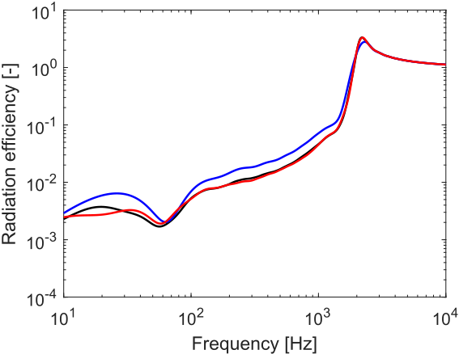
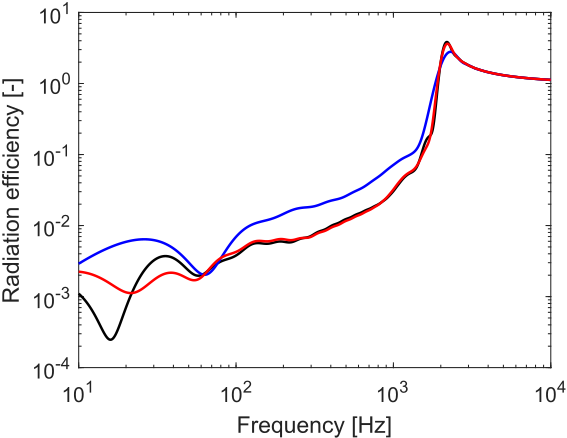
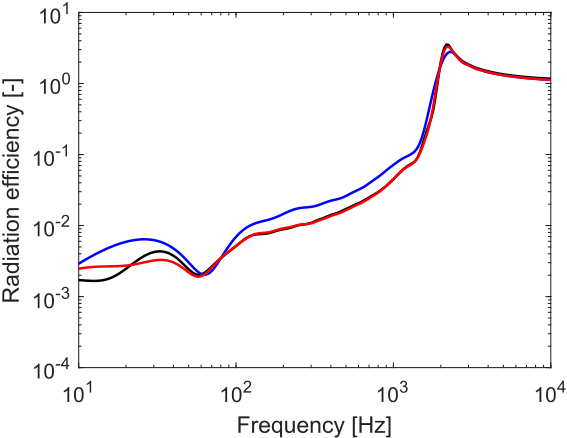
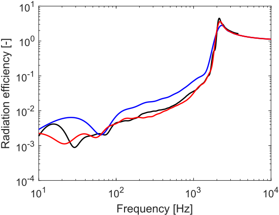

Rectangular validation examples
In these examples, a \(6\,\mathrm{mm}\) glass plate (density \(2500\,\mathrm{kg}/m^3\), quasi-longitudinal wavespeed \(5200\,\mathrm{m/s}\), and Poisson’s ratio \(0.24\)) is considered. Two glass plates are considered: a \(3\,\mathrm{m}\times 1\,\mathrm{m}\) and a \(2\,\mathrm{m}\times 2\,\mathrm{m}\) plate. For both plates, the geometry is divided into subdomains of \(1\,\mathrm{m}\times 1\,\mathrm{m}\).
For the first plate, there are therefore 3 subdomains, denoted here as subdomain 1, 2, and 3. They have the same area and therefore the same radiation efficiency in isolation, and consequently the zero order approximation equals:
\[\bar{\sigma}^{(0)}(k_\mathrm{f}) = \sum\limits_i \dfrac{S_i}{S}\bar{\sigma}_{i}(k_\mathrm{f}) = \dfrac{1}{3}\bar{\sigma}_{1}(k_\mathrm{f})+\dfrac{1}{3}\bar{\sigma}_{2}(k_\mathrm{f})+\dfrac{1}{3}\bar{\sigma}_{3}(k_\mathrm{f}) = \bar{\sigma}_{i}(k_\mathrm{f}),\]
i.e., the radiation efficiency of one subdomain in isolation. The set of adjacent subdomains consists of the group \(\{1,2\}\) and the group \(\{2,3\}\) (subdomains 1 and 3 are not adjacent). As they both consist of the radiation efficiency of a \(2\,\mathrm{m}\times 1\,\mathrm{m}\) plate, the first order approximation equals:
\[\begin{split}\bar{\sigma}^{(1)}(k_\mathrm{f}) &= \sum\limits_i\sum\limits_{\substack{j\in \epsilon_i \\ j>i}} \dfrac{S_i+S_j}{S}\bar{\sigma}_{ij}(k_\mathrm{f})-\sum_i(N_\epsilon^i-1)\dfrac{S_i}{S}\bar{\sigma}_{i}(k_\mathrm{f}) \nonumber \\
&= \dfrac{2}{3}\bar{\sigma}_{12}(k_\mathrm{f})+\dfrac{2}{3}\bar{\sigma}_{23}(k_\mathrm{f})-\dfrac{1}{3}\bar{\sigma}_{2}(k_\mathrm{f}) = \dfrac{4}{3}\bar{\sigma}_{ij}(k_\mathrm{f})-\dfrac{1}{3}\bar{\sigma}_{i}(k_\mathrm{f}).\end{split}\]
The results for the zero and first order approximation are displayed in the figure below and compared with the reference solution, i.e., where the efficient integral solution of Yu and Hopkins is applied to the entire surface. There is an excellent agreement between the first order approximation and the reference solution over the entire frequency range.

For the second plate, there are 4 subdomains, denoted as 1, 2, 3, and 4. They also have the same area. The zero order approximation equals:
\[\bar{\sigma}^{(0)}(k_\mathrm{f}) = \sum\limits_i \dfrac{S_i}{S}\bar{\sigma}_{i}(k_\mathrm{f}) = \dfrac{1}{4}\bar{\sigma}_{1}(k_\mathrm{f})+\dfrac{1}{4}\bar{\sigma}_{2}(k_\mathrm{f})+\dfrac{1}{4}\bar{\sigma}_{3}(k_\mathrm{f})+\dfrac{1}{4}\bar{\sigma}_{4}(k_\mathrm{f}) = \bar{\sigma}_{i}(k_\mathrm{f}),\]
while the first order approximation equals:
\[\begin{split}\bar{\sigma}^{(1)}(k_\mathrm{f}) &= \sum\limits_i\sum\limits_{\substack{j\in \epsilon_i \\ j>i}} \dfrac{S_i+S_j}{S}\bar{\sigma}_{ij}(k_\mathrm{f})-\sum_i(N_\epsilon^i-1)\dfrac{S_i}{S}\bar{\sigma}_{i}(k_\mathrm{f}) \nonumber \\
&= \dfrac{2}{4}\bar{\sigma}_{12}(k_\mathrm{f})+\dfrac{2}{4}\bar{\sigma}_{13}(k_\mathrm{f})+\dfrac{2}{4}\bar{\sigma}_{24}(k_\mathrm{f})+\dfrac{2}{4}\bar{\sigma}_{34}(k_\mathrm{f})-\dfrac{1}{4}\bar{\sigma}_{1}(k_\mathrm{f})-\dfrac{1}{4}\bar{\sigma}_{2}(k_\mathrm{f})-\dfrac{1}{4}\bar{\sigma}_{3}(k_\mathrm{f})-\dfrac{1}{4}\bar{\sigma}_{4}(k_\mathrm{f}) \nonumber \\ &= 2\bar{\sigma}_{ij}(k_\mathrm{f})-\bar{\sigma}_{i}(k_\mathrm{f}).\end{split}\]
The results for the zero and first order approximation are displayed in the figure below and compared with the reference solution, i.e., by applying the efficient integral solution of Yu and Hopkins to the entire surface. There is a good agreement between the first order approximation and the reference solution over most of the frequency range. Only at very low frequencies, where the correlation can be important at larger distances than the size of 1 subdomain, there are some discrepancies.

Non-rectangular validation examples
The same material as before is considered. The geometry is now, however, non-rectangular, meaning that a validation using the efficient integral of Yu and Hopkins is no longer an option, and a numerical integration is needed to validate these geometries, which is computationally expensive. Again two geometries are considered: an L shape and a window inside of a wall.
For the L shape, the plate can be divided into three square subdomains of dimensions \(1\,\mathrm{m}\times 1\,\mathrm{m}\): 1 in the corner, 2 right from 1 and 3 below 1. The zero order approximation equals:
\[\bar{\sigma}^{(0)}(k_\mathrm{f}) = \sum\limits_i \dfrac{S_i}{S}\bar{\sigma}_{i}(k_\mathrm{f}) = \dfrac{1}{3}\bar{\sigma}_{1}(k_\mathrm{f})+\dfrac{1}{3}\bar{\sigma}_{2}(k_\mathrm{f})+\dfrac{1}{3}\bar{\sigma}_{3}(k_\mathrm{f}) = \bar{\sigma}_{i}(k_\mathrm{f}),\]
while the first order approximation equals:
\[\begin{split}\bar{\sigma}^{(1)}(k_\mathrm{f}) &= \sum\limits_i\sum\limits_{\substack{j\in \epsilon_i \\ j>i}} \dfrac{S_i+S_j}{S}\bar{\sigma}_{ij}(k_\mathrm{f})-\sum_i(N_\epsilon^i-1)\dfrac{S_i}{S}\bar{\sigma}_{i}(k_\mathrm{f}) \nonumber \\
&= \dfrac{2}{3}\bar{\sigma}_{12}(k_\mathrm{f})+\dfrac{2}{3}\bar{\sigma}_{13}(k_\mathrm{f})-\dfrac{1}{3}\bar{\sigma}_{1}(k_\mathrm{f}) = \dfrac{4}{3}\bar{\sigma}_{ij}(k_\mathrm{f})-\dfrac{1}{3}\bar{\sigma}_{i}(k_\mathrm{f}),\end{split}\]
where the same results are obtained as for the first example. Note, however, that if the subdomains would not be square, \(\bar{\sigma}_{12}(k_\mathrm{f}) \neq \bar{\sigma}_{23}(k_\mathrm{f})\), and the results would be different. The results are displayed below, showing excellent agreement with the reference solution obtained using numerical integration.

For the windowed plate, a plate of \(3\,\mathrm{m}\times 3\,\mathrm{m}\) is considered with a square region of \(1\,\mathrm{m}\times 1\,\mathrm{m}\) in the center that does not radiate sound. The zero order approximation equals:
\[\begin{split}\bar{\sigma}^{(0)}(k_\mathrm{f}) &= \sum\limits_i \dfrac{S_i}{S}\bar{\sigma}_{i}(k_\mathrm{f}) \nonumber \\
&= \dfrac{1}{8}\bar{\sigma}_{1}(k_\mathrm{f})+\dfrac{1}{8}\bar{\sigma}_{2}(k_\mathrm{f})+\dfrac{1}{8}\bar{\sigma}_{3}(k_\mathrm{f})+\dfrac{1}{8}\bar{\sigma}_{4}(k_\mathrm{f})+\dfrac{1}{8}\bar{\sigma}_{5}(k_\mathrm{f})+\dfrac{1}{8}\bar{\sigma}_{6}(k_\mathrm{f})+\dfrac{1}{8}\bar{\sigma}_{7}(k_\mathrm{f})+\dfrac{1}{8}\bar{\sigma}_{8}(k_\mathrm{f}) = \bar{\sigma}_{i}(k_\mathrm{f}),\end{split}\]
while the first order approximation equals:
\[\begin{split}\bar{\sigma}^{(1)}(k_\mathrm{f}) &= \sum\limits_i\sum\limits_{\substack{j\in \epsilon_i \\ j>i}} \dfrac{S_i+S_j}{S}\bar{\sigma}_{ij}(k_\mathrm{f})-\sum_i(N_\epsilon^i-1)\dfrac{S_i}{S}\bar{\sigma}_{i}(k_\mathrm{f}) \nonumber \\
&= \dfrac{2}{8}\left[\bar{\sigma}_{12}(k_\mathrm{f})+\bar{\sigma}_{14}(k_\mathrm{f})+\bar{\sigma}_{23}(k_\mathrm{f})+\bar{\sigma}_{35}(k_\mathrm{f})+\bar{\sigma}_{46}(k_\mathrm{f})+\bar{\sigma}_{58}(k_\mathrm{f})+\bar{\sigma}_{67}(k_\mathrm{f})+\bar{\sigma}_{78}(k_\mathrm{f})\right] \nonumber \\
&\quad-\dfrac{1}{8}\left[\bar{\sigma}_{1}(k_\mathrm{f})+\bar{\sigma}_{2}(k_\mathrm{f})+\bar{\sigma}_{3}(k_\mathrm{f})+\bar{\sigma}_{4}(k_\mathrm{f})+\bar{\sigma}_{5}(k_\mathrm{f})+\bar{\sigma}_{6}(k_\mathrm{f})+\bar{\sigma}_{7}(k_\mathrm{f})+\bar{\sigma}_{8}(k_\mathrm{f})\right] \nonumber \\
&= 2\bar{\sigma}_{ij}(k_\mathrm{f})-\bar{\sigma}_{i}(k_\mathrm{f}),\end{split}\]
where the last step is again possible as square subdomains of equal size are considered. The results are displayed below, again showing good agreement with the reference solution obtained using numerical integration. For the integration, a mesh size of \(0.05\,\mathrm{m}\) was used, so frequencies above \(3700\,\mathrm{Hz}\) gave erroneous results and were therefore omitted.
